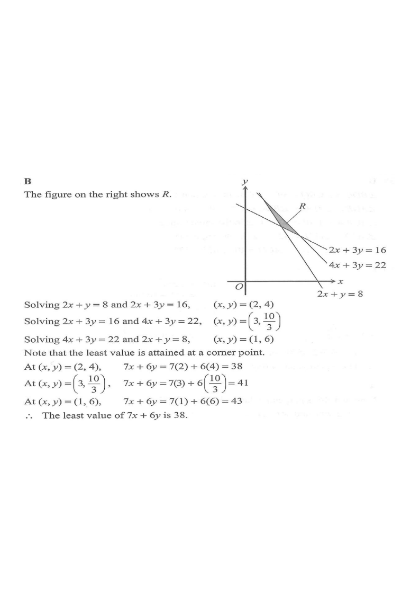

Let $R$ be the region which represents the solution of the above system of inequalities. If $(x,y)$ is a point lying in $R$, then the least value of $7x+6y$ is
A. $32$
B. $38$
C. $41$
D. $43$

Figure (original exam diagram)
1Read off the region R
The region $R$ is bounded by three lines. Two of them are “$\ge$” constraints, so $R$ lies above:
$2x+y=8$ and $2x+3y=16$.
The third is a “$\le$” constraint, so $R$ lies below$4x+3y=22$.
Hint: shade the half-plane of each line first, then keep the common overlapping part. $R$ is a triangle.
Solving Simultaneous Equations by Elimination\(a_{1}x+b_{1}y=c_{1},\ a_{2}x+b_{2}y=c_{2}\ \Rightarrow\ \text{subtract to remove one unknown}\)\((2x+3y)-(2x+y)=16-8\) gives \(2y=8\), so the vertex is \((2,4)\).
Then $2x+4=8 \Rightarrow x=2$.
$P_1=(2,\,4)$This is the top-left vertex — the meeting point of the red and blue lines.
3Boundary 2 ∩ Boundary 3
Solve $\begin{cases}2x+3y=16\\ 4x+3y=22\end{cases}$
Subtract: $2x=6 \Rightarrow x=3$.
Then $2(3)+3y=16 \Rightarrow 3y=10 \Rightarrow y=\dfrac{10}{3}$.
$P_2=\left(3,\dfrac{10}{3}\right)$This is the top-right vertex — the meeting point of the blue and green lines.
4Boundary 3 ∩ Boundary 1
Solve $\begin{cases}4x+3y=22\\ 2x+y=8\end{cases}$
From the second equation $y=8-2x$. Substitute:
$4x+3(8-2x)=22 \Rightarrow 4x+24-6x=22 \Rightarrow -2x=-2 \Rightarrow x=1$.
Method of Substitution\(y=8-2x\ \text{substituted into }4x+3y=22\)\(4x+3(8-2x)=22\) gives \(x=1\), hence the vertex \((1,6)\).
Then $y=8-2(1)=6$.
$P_3=(1,\,6)$This is the bottom vertex — the meeting point of the green and red lines.
5Least value is at a vertex
$7x+6y$ is linear, so its extreme values over the polygon $R$ occur at a corner point
Vertex Theorem for Linear Programming\(f(x,y)=ax+by\ \text{takes its extreme values at a vertex of }R\)So \(7x+6y\) only needs evaluating at the three vertices \(P_{1}\), \(P_{2}\), \(P_{3}\).
.
Evaluate $7x+6y$ at all three vertices:
Vertex
$7x+6y$
Value
$P_1=(2,4)$
$7(2)+6(4)$
$38$
$P_2=\left(3,\tfrac{10}{3}\right)$
$7(3)+6\!\left(\tfrac{10}{3}\right)$
$41$
$P_3=(1,6)$
$7(1)+6(6)$
$43$
Hint: equivalently, slide a ruler of slope $-\tfrac{7}{6}$ across $R$ and find the first vertex it touches.
6Conclusion
Comparing $38$, $41$ and $43$, the smallest is $7(2)+6(4)=38$, attained at $(x,y)=(2,4)$.
Answer: B — $38$
Least value of $7x+6y$ over $R$ equals $38$, attained at the corner point $(2,4)$.
PRACTICESimilar question — try it yourself
Question. The region \(R\) is bounded by the lines \(2x+y=10\), \(2x+3y=18\) and \(4x+3y=26\), with \(R\) above the first two lines and below the third. The least value of \(5x+4y\) over \(R\) is A. \(29\) B. \(31\) C. \(32\) D. \(34\) [1 mark]
Show the worked solution
Step 1. \(2x+y=10\) with \(2x+3y=18\): subtracting gives \(2y=8\), so \(y=4\), \(x=3\); vertex \((3,4)\).
Step 2. \(2x+3y=18\) with \(4x+3y=26\): subtracting gives \(2x=8\), so \(x=4\), \(y=\dfrac{10}{3}\); vertex \(\left(4,\dfrac{10}{3}\right)\).
Step 3. \(4x+3y=26\) with \(y=10-2x\): \(4x+30-6x=26\), so \(x=2\), \(y=6\); vertex \((2,6)\).
Step 4. \(5x+4y\) at the vertices: \(15+16=31\), \(20+\dfrac{40}{3}\approx33.3\), and \(10+24=34\).
Step 5. The least value is \(31\), attained at \((3,4)\).